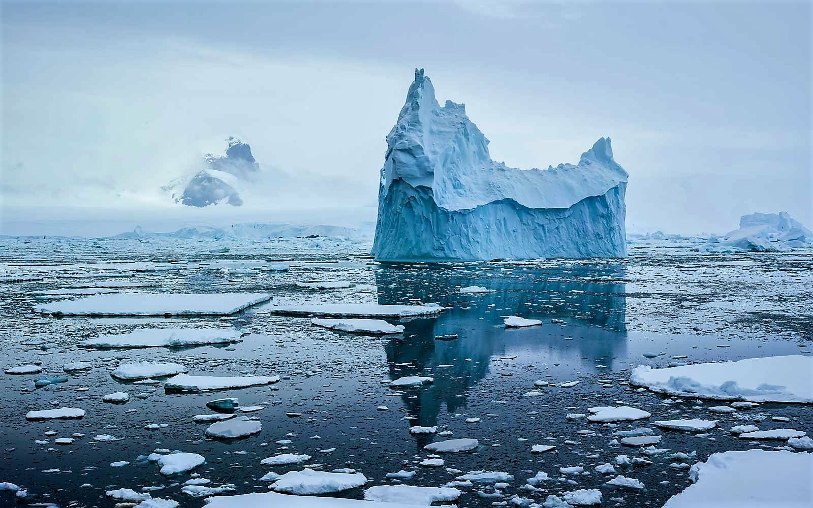
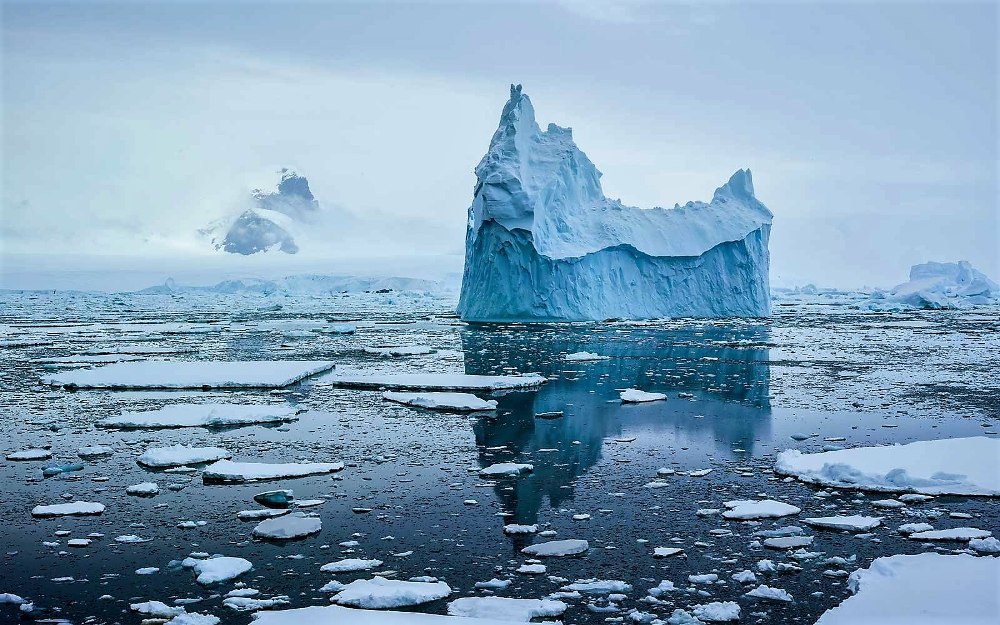
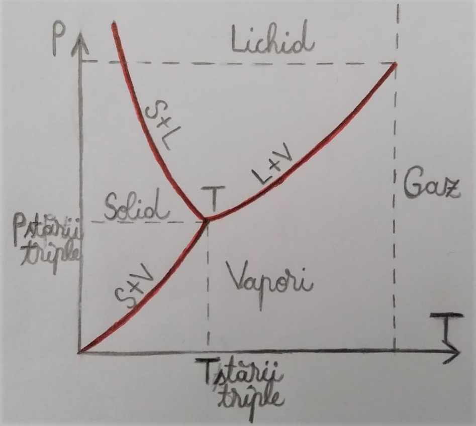

Topirea și solidificarea
 

Solid-> Lichid: se realizează cu absorbție de căldură din exterior.
Lichid-> Solid: se realizează cu cedare de căldură în exterior.
O structură cristalină este o aranjare (dispunere) generală unică
a atomilor sau moleculelor unei substanțe solide sau lichide cristaline. (ex: gheața, metalul)
În timpul topirii/ solidificării substanței cristaline temperatura ramâne constantă.
Un studiu efectuat de NASA privind topirea ghețarilor arată că aproximativ 150 miliarde de tone de gheață dispar anual, astfel nivelul
oceanului planetar crescând cu 4 mm/an.
Vaporizarea și condensarea
Lichid-> Vapori: se realizează cu absorbție de căldură din exterior.
Vapori-> Lichid: se realizează cu cedare de căldură în exterior.
Evaporarea are loc la orice temperatură, iar în timpul acesteia temperatura lichidului scade. Viteza evaporării crește odată cu creșterea temperaturii.
În timp ce vaporizarea în atmosferă este un proces lent, vaporizarea în vid se produce instantaneu. Vidul reprezintă absența materiei dintr-un anumit spațiu.( ex: spațiul interstelar)
Apa în natură se află sub forma vaporilor și particulelor. Moleculele de apă combinate cu mici particule de praf, sare și fum din atmosferă, formează mici picături, ce se unesc, alcătuind norii. Aceștia se formează în atmosferă, pentru că aerul cu vapori de apă se ridică, apoi se răcește.
Experiența a dovedit că în aceleași condiții de temperatură și presiune, o substanță poate să coexiste în mai multe stări de agregare. Aceste stări se numesc faze. Trecerea unei substanțe dintr-o fază in alta se numește transformare de fază.
Sublimarea și desublimarea
Solid->Vapori: se realizează cu absorbție de căldură din exterior.
Vapori->Solid: se realizează cu cedare de căldură în exterior.
Zăpada și gheața sublimează trecând direct în vapori. Așa se explică uscarea rufelor înghețate, iarna. Tot prin fenomenul de sublimare se explică și mirosul unor corpuri solide. (săpun, detergent etc.)
Starea triplă este starea în care coexistă cele trei stări de agregare ale unei substanțe.